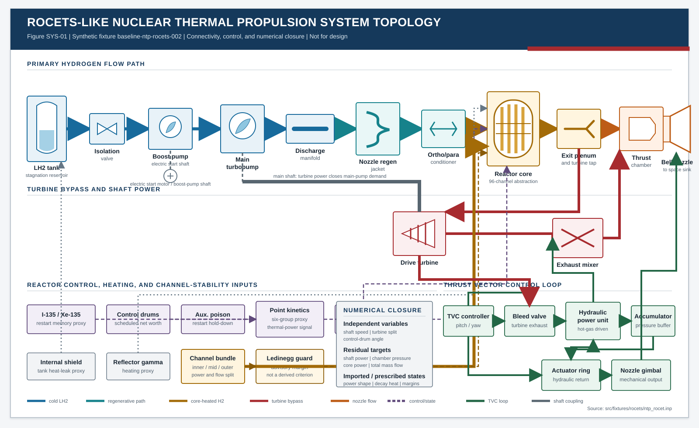
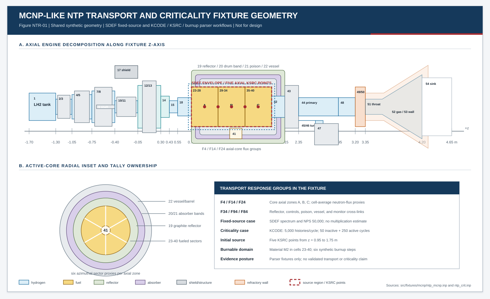
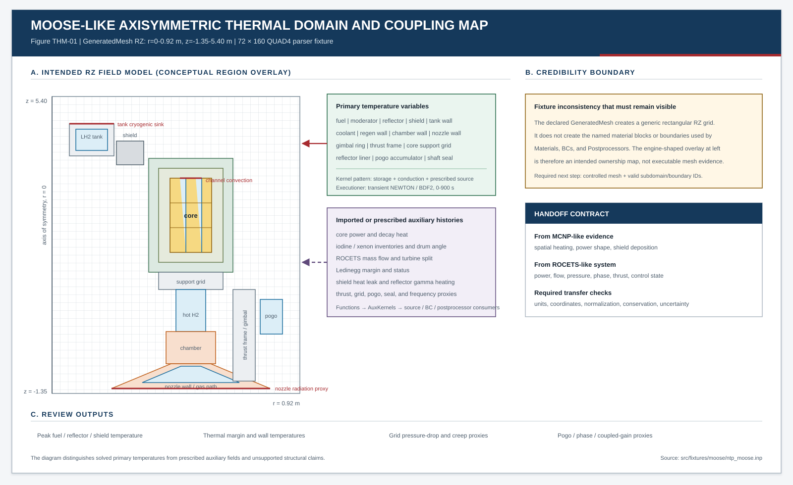

{kind=link}
{kind=link}
{kind=link}
01 / Scope
What This Page Does and Does Not Claim
The three input tours describe a synthetic analysis workflow rather than three qualified production models. This page supplies the physical equations behind that workflow so a reviewer can distinguish a real governing law from a parser fixture, a schedule, a reduced-order approximation, or an aspirational cross-model link.
Useful claim
The fixture set demonstrates model decomposition, interfaces, provenance, balance closure, review quantities, and the questions required to qualify an NTP engine analysis.
Unsupported claim
The fixture set does not demonstrate an executed or validated MCNP criticality/depletion calculation, a licensed ROCETS execution, an executable coupled MOOSE application, production material data, design validation, or safety qualification.
KCODE/burnup companion. The latter includes fabricated cycle statistics,
k-effective, inventory, xenon, and decay-heat records for parser testing; it is not an
MCNP calculation record. The ROCETS-like deck is a highly prescribed systems transient. The
MOOSE-like deck contains a thermal finite-element pattern plus imported proxy fields, but it lacks
the geometry and mechanics needed to substantiate structural margins. Any result shown in the app
should retain those labels.
The main historical anchors are Peery's description of ROCETS-based NTR system modeling [1] and Nelson and Simpson's integrated engine-model development paper [2]. The latter explicitly describes a sequence in which the systems model establishes boundary conditions, a thermal-hydraulic/stress process searches acceptable reactor geometry, and MCNP evaluates nuclear acceptability and shielding. That hierarchy is the organizing idea here.
02 / Architecture
One Engine, Three Modeling Views

| View | Natural independent variables | Natural outputs | Fixture posture |
|---|---|---|---|
| MCNP-like | Geometry, material state, source or fission state, nuclear data | Flux, reaction rates, heating, multiplication, control worth, leakage | Fixed-source geometry and flux-tally parser fixture |
| ROCETS-like | Mission commands, component maps, initial states, control targets | Flow, pressure, temperature, shaft power, thrust, transient state | Scheduled systems network with illustrative residual closure |
| MOOSE-like | Mesh, material laws, loads, source fields, boundary conditions | Temperature and, if configured, displacement, stress, strain, failure measures | Thermal kernel pattern plus prescribed multiphysics proxies |
Where
- q″(x,t)
- Mapped volumetric heat-generation rate at position x and time t [W/m3].
- Vtarget
- Receiving thermal-model volume over which the source is integrated [m3].
- Pdeposited(t)
- Total reactor or component power deposited in the receiving region [W].
- dV
- Differential volume element used by the integration [m3].
03 / ROCETS-like physics
System Conservation, Fluid Networks, and Turbomachinery
The system connectivity and numerical ownership are shown together in Figure SYS-01. Component graphics communicate topology; they are not physical dimensions. The independent variables, residual targets, and imported states shown in the closure panel define how the synthetic network reaches a solved operating point.
Control-volume mass and energy
A rocket engine systems code is fundamentally a graph of control volumes and components. At each storage node, mass and energy evolve from the imbalance of inlet, outlet, heat, and work terms. At a steady junction the accumulation terms vanish.
Where
- mcv
- Mass stored inside the control volume [kg].
- t
- Time [s].
- ṁi, ṁj
- Mass-flow rates through inlet i and outlet j [kg/s].
- Σin/out
- Summation over every inlet or outlet connected to the control volume.
mass_flow_closure residual:
turbopump mass flow minus nozzle mass flow. A complete branched network also needs every turbine,
bleed, bypass, and mixer path included.
Where
- Ecv
- Total energy stored in the control volume [J].
- ṁ
- Mass-flow rate through an inlet or outlet [kg/s].
- h
- Specific enthalpy of the flowing hydrogen [J/kg].
- V
- Local bulk-flow velocity [m/s].
- g
- Reference gravitational acceleration [m/s2].
- z
- Elevation relative to the chosen datum [m].
- Q̇
- Net heat-transfer rate into the control volume [W].
- Ẇ
- Net work rate delivered by the control volume [W].
- i, j
- Indices identifying individual inlet and outlet streams.
h = cp T over the whole engine. NESS documented property coverage
from 13.8 to 3000 K and 0.2 to 16 MPa for its historical model
[3].
Reactor heat addition
Where
- Q̇core,dep
- Reactor power deposited in the core materials and propellant [W].
- ṁ
- Total hydrogen mass-flow rate through the active core [kg/s].
- hin, hout
- Core-inlet and core-outlet specific enthalpy [J/kg].
- Q̇solid storage
- Rate of energy accumulation in fuel, moderator, and structure [W].
- Q̇loss
- Heat transferred to other components or the environment [W].
Pressure loss and channel flow
Where
- Δp
- Total pressure loss through the passage [Pa].
- f
- Darcy friction factor for wall shear [dimensionless].
- L
- Flow-path length [m].
- Dh
- Hydraulic diameter of the passage [m].
- Kk
- Local loss coefficient for fitting or restriction k [dimensionless].
- ρ
- Local fluid density [kg/m3].
- V
- Section-average flow velocity [m/s].
- Σk
- Sum over all discrete local-loss elements.
f is the Darcy friction factor, Dh hydraulic diameter, and
K a form-loss coefficient. Heated hydrogen channels may require compressibility,
acceleration pressure drop, property variation, and correlation validity checks beyond this compact form.
Where
- f
- Darcy turbulent-flow friction factor [dimensionless].
- ε
- Equivalent absolute wall roughness [m].
- Dh
- Hydraulic diameter [m].
- Re
- Reynolds number based on bulk velocity and hydraulic diameter [dimensionless].
- log10
- Base-10 logarithm.
Pumps, turbines, and shaft closure
Where
- Ẇpump
- Shaft power absorbed by the pump [W].
- ṁ
- Pump mass-flow rate [kg/s].
- Δp
- Pump pressure rise [Pa].
- ρ
- Fluid density used for the incompressible approximation [kg/m3].
- ηp
- Pump efficiency from the applicable performance map [dimensionless].
Where
- Ẇturb
- Shaft power produced by the turbine [W].
- ṁ
- Hydrogen mass-flow rate through the turbine [kg/s].
- ηt
- Turbine isentropic efficiency [dimensionless].
- hin
- Actual turbine-inlet specific enthalpy [J/kg].
- hout,s
- Isentropic outlet enthalpy at the specified exit pressure [J/kg].
Where
- I
- Combined rotating inertia of shaft, pump, turbine, and attached hardware [kg·m2].
- ω
- Shaft angular speed [rad/s].
- τt, τp
- Turbine driving torque and pump resisting torque [N·m].
- τloss
- Bearing, windage, seal, and other shaft-loss torque [N·m].
- Rshaft
- Algebraic shaft-power residual driven toward zero [W].
- Ẇturb/pump/loss
- Turbine, pump, and parasitic power terms [W].
- t
- Time [s].
shaft_power_balance = drive_turbine.power -
main_turbopump.shaft_power. A credible transient also needs shaft inertia, loss torque,
startup motor torque, and consistent map states.
04 / MCNP-like and kinetics physics
Neutron Transport, Multiplication, Power, and Reactor Memory

Transport equation
Neutron transport resolves particle balance in position, direction, energy, and time. MCNP estimates observables by sampling many particle histories rather than discretizing the equation in the same manner as a deterministic solver. The underlying balance can be written as:
Where
- ψ(r,Ω,E,t)
- Angular neutron flux at position, direction, energy, and time.
- r
- Spatial position vector [m].
- Ω
- Unit vector specifying neutron flight direction.
- E
- Neutron energy [eV or MeV, consistently].
- t
- Time [s].
- v
- Neutron speed corresponding to energy E [m/s].
- ∇
- Spatial gradient operator.
- Σt
- Total macroscopic interaction cross section [1/m].
- Σs
- Differential macroscopic scattering cross section from primed to unprimed phase space.
- E′, Ω′
- Incident neutron energy and direction before scattering.
- Sfission/external
- Combined fission and prescribed external neutron source.
ψ is angular flux, Σt total macroscopic cross section,
and the integral is in-scattering. The MCNP theory manual is the controlling code reference
[4].
Fixed-source and criticality fixture pair
ntp_mcnp: fixed source
MODE N and SDEF prescribe neutron histories. The fixture can demonstrate
region definitions and tally parsing, but it does not solve a fission-source eigenvalue problem.
ntp_crit: synthetic KCODE/burnup
KCODE 5000 1.0 50 250, five axial KSRC points, burn flags on cells
23-40, and six depletion steps exercise criticality and burnup parsing. The paired output values
are fabricated and do not demonstrate solver execution.
Where
- ℒ
- Transport and removal operator, including leakage and total interactions.
- 𝒮
- Non-fission scattering operator.
- ℱ
- Fission-neutron production operator.
- ψ
- Eigenfunction representing the steady angular neutron-flux shape.
- keff
- Effective neutron multiplication factor [dimensionless].
- ρ
- Reactivity, defined here as (keff - 1)/keff [dimensionless].
- pcm
- Per cent mille; 1 pcm equals 10-5 in reactivity.
k-effective. The companion output explicitly
reports 1.01039 ± 0.00072, but that record is fabricated parser evidence, not an
MCNP estimate. Drum reserve, poison worth, burnup reactivity, and shutdown implications must retain
the same synthetic label.
What the new output records exercise
| Record family | Fixture content | Physics meaning in a real analysis | Current evidence status |
|---|---|---|---|
| Source convergence | 50 inactive cycles; entropy plateau after cycle 42 | Whether the sampled fission source has forgotten its initial guess | Synthetic narrative and statistics |
| Eigenvalue | Combined k_eff = 1.01039 ± 0.00072 | Balance of fission-neutron production against absorption and leakage | Fabricated parser record |
| Depletion trend | Six steps ending at k_eff = 0.99284 ± 0.00094 | Evolution of composition and multiplication under a specified irradiation history | Synthetic low-depth sweep |
| Restart memory | I-135/Xe-135 proxies; peak xenon worth −742 pcm | Time-dependent poisoning that can constrain restart control authority | Fabricated inventory and worth table |
| Shutdown heat | Normalized decay heat at 1, 10, 100, and 1000 s | Residual power driving cooldown requirements after fission power is removed | Imported thermal-load proxy |
Source files: ntp_crit.inp and
ntp_crit.out. A real review would also
require executable-deck verification, material and nuclear-data pedigree, convergence diagnostics,
benchmark bias, uncertainty, depletion-chain controls, configuration management, and independent review.
Flux, reaction rates, and heating
Where
- Rx(r)
- Volumetric rate for reaction type x at position r [reactions/(m3·s)].
- Σx(E)
- Macroscopic cross section for reaction x [1/m].
- φ(r,E)
- Scalar neutron flux per unit energy.
- q″(r)
- Volumetric nuclear heat-generation rate [W/m3].
- κ(E)
- Recoverable heat deposited per fission at energy E [J/fission].
- Σf(E)
- Macroscopic fission cross section [1/m].
- E
- Neutron energy integrated over the modeled spectrum.
Where
- φ̄
- Estimated cell-average scalar flux under the selected source normalization.
- N
- Number of source particle histories sampled.
- V
- Cell volume [m3].
- wi
- Statistical weight of track segment i.
- ℓi
- Length of track segment i inside the cell [m].
- Σtracks
- Sum over all scored track segments in the cell.
F4:N tallies are cell-average neutron-flux proxies. w is particle
weight, ℓ path length, V cell volume, and N source histories,
subject to the exact MCNP normalization conventions [4].
Point kinetics and feedback
Point kinetics collapses the spatial neutron field to total power plus delayed-neutron precursor populations. This is appropriate only when a spatial shape assumption is defensible for the transient being studied.
Where
- n(t)
- Neutron population, neutron density, or normalized reactor power.
- ρ(t)
- Total time-dependent reactivity [dimensionless].
- β, βi
- Total and group-specific effective delayed-neutron fractions.
- Λ
- Prompt neutron generation time [s].
- Ci
- Concentration or normalized inventory of delayed-neutron precursor group i.
- λi
- Radioactive decay constant of precursor group i [1/s].
- S
- Independent neutron source term in the point model.
- i = 1...6
- Index over the six delayed-neutron precursor groups.
n is neutron population or normalized power, βi delayed fractions,
λi precursor decay constants, and Λ generation time. In the fixture,
kinetics behavior is schedule-driven; these equations are explanatory, not evidence of execution.
See Keepin [14].
Where
- ρ(t)
- Total reactor reactivity at time t.
- ρdrum
- Reactivity contribution from control-drum position.
- ρpoison
- Reactivity contribution from auxiliary or fission-product poison.
- αf, αm
- Fuel and moderator temperature-reactivity coefficients [reactivity/K].
- Tf, Tm
- Representative fuel and moderator temperatures [K].
- Tref
- Reference temperature at which feedback terms are zero [K].
- αρH2
- Hydrogen-density reactivity coefficient [reactivity per density unit].
- ρH2, ρref
- Current and reference hydrogen densities [kg/m3].
Iodine-xenon restart memory and decay heat
Where
- I, X
- I-135 and Xe-135 number densities or normalized inventories.
- γI, γX
- Effective direct fission yields of I-135 and Xe-135 [atoms/fission].
- Σfφ
- Local volumetric fission rate [fissions/(m3·s)].
- λI, λX
- I-135 and Xe-135 radioactive decay constants [1/s].
- σa,X
- Microscopic neutron-absorption cross section of Xe-135 [m2].
- φ
- Neutron flux driving xenon burn-out [neutrons/(m2·s)].
- t
- Time from the selected irradiation or shutdown condition [s].
Where
- Q̇decay(t)
- Total recoverable decay-heat power after shutdown [W].
- P0
- Reference fission power immediately before shutdown [W].
- aj
- Fractional amplitude assigned to decay-heat group j.
- λj
- Effective decay constant for group j [1/s].
- N
- Number of exponential groups in the reduced representation.
- t
- Elapsed time after the reference shutdown event [s].
05 / MOOSE-like and reactor thermal physics
Core Heat Conduction, Channel Convection, and Thermal Margin

GeneratedMesh.
Transient heat equation
Where
- ρ
- Solid material density [kg/m3].
- cp
- Specific heat capacity at constant pressure [J/(kg·K)].
- T
- Temperature field [K].
- t
- Time [s].
- k
- Thermal conductivity, potentially temperature dependent [W/(m·K)].
- ∇
- Spatial gradient or divergence operator as positioned.
- q″
- Volumetric heat-source density [W/m3].
Where
- r, z
- Radial and axial coordinates of the axisymmetric domain [m].
- ρ
- Material density [kg/m3].
- cp
- Specific heat capacity [J/(kg·K)].
- T(r,z,t)
- Axisymmetric temperature field [K].
- k
- Thermal conductivity [W/(m·K)].
- q″
- Volumetric heat-generation rate [W/m3].
- t
- Time [s].
Boundary and interface heat transfer
Where
- k
- Thermal conductivity of the solid at the boundary [W/(m·K)].
- ∇T
- Temperature gradient evaluated at the boundary [K/m].
- n
- Outward unit normal vector on the solid boundary.
- q″surface
- Heat flux leaving the wall under the stated sign convention [W/m2].
- h
- Convective heat-transfer coefficient [W/(m2·K)].
- Tw
- Wall-surface temperature [K].
- Tb
- Bulk fluid or far-field temperature [K].
Where
- ṁ
- Mass-flow rate through one channel or channel group [kg/s].
- hfluid
- Hydrogen specific enthalpy; represented by the first h in the equation [J/kg].
- z
- Axial distance along the coolant passage [m].
- q′(z)
- Heat transferred to the coolant per unit axial length [W/m].
- hc(z)
- Local convective coefficient; represented by the second h(z) in the equation [W/(m2·K)].
- Pw
- Wetted perimeter of the coolant channel [m].
- Tw, Tb
- Local channel-wall and bulk-coolant temperatures [K].
Pw is wetted perimeter. NASA's ELM program was developed specifically for rapid
steady thermal-hydraulic analysis of NTR fuel-element coolant channels and comparison of heat-transfer
and friction correlations against NERVA data [8].
Dimensionless heat-transfer closure
Where
- Re
- Reynolds number, the ratio of inertial to viscous effects.
- Pr
- Prandtl number, the ratio of momentum to thermal diffusivity.
- Nu
- Nusselt number, the dimensionless convective heat-transfer coefficient.
- ρ
- Fluid density [kg/m3].
- V
- Bulk channel velocity [m/s].
- Dh
- Hydraulic diameter [m].
- μ
- Dynamic viscosity [Pa·s].
- cp
- Fluid specific heat capacity [J/(kg·K)].
- k
- Fluid thermal conductivity [W/(m·K)].
- h
- Convective heat-transfer coefficient [W/(m2·K)].
Power shape, peaking, and centerline temperature
Where
- q″(r,θ,z,t)
- Local volumetric heat-generation rate in fuel [W/m3].
- Pdep(t)
- Total time-dependent power deposited in the modeled fuel volume [W].
- Vfuel
- Total fuel volume receiving the deposited power [m3].
- fr(r,θ)
- Normalized radial and azimuthal power-shape factor.
- fz(z)
- Normalized axial power-shape factor.
- r, θ, z
- Radial, azimuthal, and axial coordinates.
- t
- Time [s].
Where
- Tc
- Fuel centerline temperature [K].
- Ts
- Fuel surface temperature at radius R [K].
- q″
- Uniform volumetric heat-generation rate [W/m3].
- R
- Radius of the idealized solid cylinder [m].
- k
- Constant fuel thermal conductivity [W/(m·K)].
Where
- ΔTmargin
- Remaining temperature margin to the selected allowable [K].
- Tallow
- Approved temperature allowable for the stated material and failure mode [K].
- Tpeak
- Calculated or imported peak temperature [K].
- UT
- Temperature utilization ratio; values approaching one consume the selected allowable.
06 / Nozzle and performance physics
Choking, Expansion, Thrust, and Regenerative Cooling
Choked throat flow
Where
- ṁ
- Choked mass-flow rate through the nozzle throat [kg/s].
- Cd
- Discharge coefficient accounting for nonideal throat flow.
- At
- Nozzle throat area [m2].
- p0
- Upstream stagnation pressure [Pa].
- T0
- Upstream stagnation temperature [K].
- γ
- Ratio of specific heats, cp/cv.
- R
- Specific gas constant for hydrogen [J/(kg·K)].
Where
- A
- Local nozzle cross-sectional area [m2].
- A*
- Critical sonic area at which Mach number equals one [m2].
- M
- Local Mach number, V/a [dimensionless].
- γ
- Ratio of specific heats for the idealized gas.
Thrust and specific impulse
Where
- F
- Net axial engine thrust [N].
- ṁ
- Total propellant mass-flow rate through the nozzle [kg/s].
- Ve
- Area-averaged axial exhaust velocity at the nozzle exit [m/s].
- pe, pa
- Nozzle-exit static pressure and ambient pressure [Pa].
- Ae
- Nozzle exit area [m2].
- Isp
- Specific impulse [s].
- g0
- Standard Earth gravitational acceleration, 9.80665 m/s2.
- Veq
- Equivalent exhaust velocity including the pressure-thrust contribution [m/s].
Where
- Ve
- Ideal exhaust velocity at the selected exit pressure [m/s].
- γ
- Ratio of specific heats.
- R
- Specific gas constant for the exhaust mixture [J/(kg·K)].
- T0
- Chamber or nozzle-inlet stagnation temperature [K].
- p0
- Chamber or nozzle-inlet stagnation pressure [Pa].
- pe
- Nozzle-exit static pressure [Pa].
R = Ru/M. It omits losses, chemistry changes, wall heat transfer, nonuniformity, and
two-dimensional divergence.
Chamber and nozzle heat transfer
Where
- hg
- Hot-gas-side convective heat-transfer coefficient [W/(m2·K) in a consistent SI implementation].
- Dt
- Nozzle throat diameter [m].
- μ
- Hot-gas dynamic viscosity evaluated by the selected Bartz convention [Pa·s].
- cp
- Hot-gas specific heat capacity [J/(kg·K)].
- Pr
- Hot-gas Prandtl number.
- pc
- Chamber stagnation pressure [Pa].
- c*
- Characteristic exhaust velocity [m/s].
- rc
- Throat radius of curvature [m].
- At, A
- Throat area and local nozzle flow area [m2].
- σB
- Bartz correction for wall temperature and local compressible-flow property effects.
- 0.026
- Empirical coefficient whose value depends on the exact equation form and unit convention.
Dt, chamber pressure pc,
characteristic velocity c*, throat radius of curvature rc, local area,
and a temperature/property correction σB. Coefficient conventions vary with units
and evaluation state; use the original formulation and a controlled implementation
[11]. Nelson and Simpson report Bartz-based hot-gas heating in their
fast nozzle-cooling model [2].
Where
- q″
- Steady local heat flux from hot gas through the wall to coolant [W/m2].
- hg, hc
- Hot-gas-side and coolant-side convective coefficients [W/(m2·K)].
- Taw
- Hot-gas adiabatic-wall or recovery temperature [K].
- Twg, Twc
- Wall temperatures on the gas and coolant faces [K].
- Tb
- Bulk coolant temperature [K].
- t
- Effective wall thickness across the conduction path [m].
- kw
- Wall thermal conductivity [W/(m·K)].
07 / Thermomechanics
Thermal Strain, Stress, Creep, and Support Loads
Kinematics and constitutive response
Where
- ε
- Small total strain tensor [dimensionless].
- u
- Displacement vector field [m].
- ∇u
- Displacement-gradient tensor.
- ( )T
- Tensor transpose operation.
- εth
- Isotropic thermal strain tensor [dimensionless].
- α
- Coefficient of linear thermal expansion [1/K].
- T, Tref
- Current and stress-free reference temperatures [K].
- I
- Second-order identity tensor.
Where
- σ
- Cauchy stress tensor [Pa].
- C
- Fourth-order elastic stiffness tensor [Pa].
- ε
- Total strain tensor.
- εth
- Thermal strain tensor.
- εinelastic
- Creep, plastic, swelling, or other inelastic strain tensor.
- :
- Double tensor contraction.
- ρ
- Structural material density [kg/m3].
- b
- Body force per unit mass, such as gravity [m/s2].
- a
- Material acceleration vector [m/s2].
- ∇·σ
- Divergence of stress, representing internal force per unit volume [N/m3].
Failure measures
Where
- σvM
- von Mises equivalent stress [Pa].
- σ1, σ2, σ3
- Three principal normal stresses [Pa].
- 1/2
- Normalization arising from the second deviatoric stress invariant.
Where
- ε̇cr
- Equivalent creep-strain rate [1/s].
- A
- Calibrated material pre-exponential coefficient with units consistent with the equation.
- σeq
- Equivalent stress driving creep [Pa].
- n
- Stress exponent determined from material data.
- Qa
- Apparent activation energy for creep [J/mol].
- R
- Universal gas constant [J/(mol·K)].
- T
- Absolute material temperature [K].
Support-grid and localized pressure load
Where
- Δpgrid
- Pressure loss across the support grid or restriction [Pa].
- Kgrid
- Empirical grid form-loss coefficient.
- ρ
- Fluid density at the grid [kg/m3].
- Vopen
- Average velocity through the net open flow area [m/s].
- ṁ
- Mass-flow rate passing through the grid [kg/s].
- Aopen
- Total open flow area after accounting for blockage [m2].
08 / Radiation environment
Shielding, Attenuation, and Nuclear Heating
Shielding is intentionally a deferred trade in the demo. The MCNP-like input preserves shield regions and tally interfaces, while the systems and thermal fixtures carry shield heat-leak proxies. That is enough to discuss ownership, but not enough to size a shield or report dose.
Where
- Φ(x)
- Radiation flux or intensity after traversing shield thickness x.
- Φ0
- Incident unshielded flux or intensity at the shield entrance.
- B(E,x)
- Energy- and thickness-dependent buildup factor for scattered radiation.
- Σr
- Macroscopic removal or attenuation coefficient [1/m].
- E
- Radiation energy at which the response is evaluated.
- x
- Shield path length or thickness [m].
- e
- Base of the natural logarithm.
B represents buildup from scattered radiation. For neutrons, energy degradation,
secondary gamma production, streaming, anisotropy, mixed materials, and geometry make a single
exponential inadequate for design. LANL provides an accessible discussion of gamma attenuation
[18]; production NTP shielding requires coupled transport and validated
dose/heating responses.
Where
- Ḋ
- Dose rate or other integrated response rate in the units defined by R.
- φ(E)
- Energy-dependent particle flux spectrum.
- R(E)
- Energy-dependent flux-to-dose, heating, activation, or damage response coefficient.
- E
- Particle energy integrated over the modeled spectrum.
- dE
- Differential energy interval.
09 / Stability and anomaly investigation
Static Flow Stability and Coupled Dynamic Response
Ledinegg static instability
Parallel heated channels can redistribute flow if the pressure-drop characteristic has an adverse slope. A static Ledinegg assessment compares the pressure rise available from the supply system with the pressure drop demanded by a channel at the same flow.
Where
- Δpdemand(ṁ)
- Pressure drop required by the heated channel at mass flow ṁ [Pa].
- Δpsupply(ṁ)
- Pressure rise or available differential supplied by the feed system [Pa].
- ṁ
- Channel mass-flow rate [kg/s].
- d/dṁ
- Local derivative with respect to channel mass-flow rate.
- > 0
- Under this sign convention, a positive net slope indicates a locally restoring static response.
ledinegg_instability_switch is only an interface and scheduled advisory state. See the
original Ledinegg reference [20].
Linearized coupled stability
Where
- δx
- Vector of small state perturbations about the operating point.
- δẋ
- Time derivative of the state-perturbation vector.
- δu
- Vector of small external-input or command perturbations.
- A
- Linearized system or state matrix.
- B
- Linearized input matrix.
- λj(A)
- Eigenvalue j of the system matrix.
- Re[ ]
- Real part of a generally complex eigenvalue.
Where
- G(s)
- Open-loop transfer function for the complete coupled feedback path.
- s
- Complex Laplace frequency variable, s = σ + iω [1/s].
- Gfeed
- Feed-system pressure/flow response.
- Gcore
- Core thermal-hydraulic density and heat-transfer response.
- Gkinetics
- Reactor-power response to reactivity or density perturbation.
- Gstructure
- Structural modal or alignment response.
- Gsuppressor
- Accumulator or pogo-suppression transfer function.
- 1 + G(s) = 0
- Closed-loop characteristic equation whose roots determine linear stability.
10 / Numerical methods
Nonlinear Closure, Time Integration, Monte Carlo Statistics, and Surrogates
Newton iteration
Where
- xk
- Current vector of nonlinear unknowns at iteration k.
- R(xk)
- Residual vector evaluated at the current iterate.
- J(xk)
- Jacobian matrix, ∂R/∂x, evaluated at the current iterate.
- Δxk
- Computed Newton correction vector.
- xk+1
- Updated nonlinear solution vector.
- k
- Nonlinear iteration index.
BDF2 transient integration
Where
- y
- Any time-dependent solution variable or state vector.
- yn+1
- Unknown solution at the new time level.
- yn, yn-1
- Solutions at the two preceding time levels.
- Δt
- Constant time-step size for this displayed form [s].
- n
- Discrete time-level index.
- dy/dt
- Continuous time derivative approximated at time level n + 1.
Monte Carlo precision
Where
- x̄
- Monte Carlo sample mean of the scored quantity.
- xi
- Contribution from statistically sampled history or batch i.
- N
- Number of independent histories or batches used by the estimator.
- sx̄
- Estimated standard error of the sample mean.
- R
- Estimated relative standard error, sx̄/|x̄|.
- ∝ 1/√N
- Asymptotic sampling-error trend when estimator assumptions are satisfied.
Response surfaces for fast system trades
Where
- ŷ(x)
- Surrogate prediction of the high-fidelity model response.
- xi, xj
- Normalized or dimensional input variables.
- β0
- Regression intercept.
- βi
- First-order regression coefficients.
- βij
- Quadratic and cross-term regression coefficients.
- δ(x)
- Unresolved model discrepancy or surrogate residual at input x.
- i, j
- Indices over the selected surrogate input dimensions.
11 / Traceability
Where Each Physics Topic Appears in the Inputs
| Physics topic | MCNP-like input | ROCETS-like input | MOOSE-like input | Honest interpretation |
|---|---|---|---|---|
| Neutron transport | MODE N, cells, surfaces, materials; SDEF fixed-source or KCODE/KSRC companion |
Imported or proxy neutronic state | Imported power/heating auxiliaries | Two synthetic source postures; the KCODE output is fabricated parser evidence |
| Core power shape | Three axial by six sector core partition; F4 tallies | Power-shape schedules | Axial/radial auxiliary functions and source terms | Traceable shape interface, not conservative physical mapping yet |
| Point kinetics | Delayed-group and generation-time proxy records in ntp_crit.out |
reactor_neutronics point_kinetics |
Kinetics response proxy | Cross-model parameter handoff demonstration, not evaluated kinetics data |
| I/Xe and decay heat | Synthetic burnup, inventory, xenon-worth, and decay-heat tables in ntp_crit.out |
Named proxy components and schedules | Imported auxiliary histories | State-memory ingestion demonstration, not a depletion prediction |
| Channel heat transfer | Power/heating source owner in a real workflow | Multi-channel core and pressure-loss maps | Conduction kernels and prescribed convection BCs | Reduced-order thermal architecture; no resolved coolant channels |
| Turbomachinery | Spatial context only | Pump/turbine maps, shaft residual, startup motor | Thermal/load proxies for shaft seals | System-model responsibility |
| Nozzle performance | Downstream transport/heating regions | Expansion nozzle, chamber, thrust outputs | Wall-temperature variables and prescribed heat transfer | Performance and cooling must share state consistently |
| Thermomechanics | Radiation load source in a real workflow | Pressure, thrust, TVC, and support loads | Temperatures and margin proxies, but no displacement solve | Called for, not implemented |
| Shielding | Shield cells and flux tallies | Shield heat-leak state | Shield temperature and heat-leak proxy | Deferred trade; no dose or shield sizing claim |
| Ledinegg stability | Virtual parser monitor only | Scheduled margin and status | Imported margin/status and response metadata | Investigation flag, not a calculated criterion |
| Coupled dynamics | Possible feedback coefficients in a qualified loop | System states and controller paths | Frequency/gain proxies | Architecture metadata, not eigenanalysis |
Historical validation-data search map
The fixture should be presented as a traceability scaffold. A real design workflow would need controlled evidence from historical tests, benchmark designs, modern program records, and independently reviewed analyses before any numerical claim could be used. The list below is intentionally medium-depth and non-exhaustive: it identifies places a reviewer might begin looking for validation data, not sources that validate the synthetic values in this repository.
| Evidence family | Representative references | Relevant fixture topics | Important caveat |
|---|---|---|---|
| Rover / NERVA / Nevada ground tests | MacMillan, Finseth, Gerrish, Robbins, Bennett; Kiwi, Phoebus, NRX/EST, NRX/XE, Pewee, Nuclear Furnace | Core power, startup/restart, fuel behavior, hydrogen heating, integrated reactor/engine testing, facility interfaces | Historical test data require configuration reconstruction, uncertainty review, instrumentation pedigree, and applicability screening. |
| SNRE benchmark lineage | Schnitzler; Borowski; late LANL SNRE design summaries | Compact solid-core reference geometry, enrichment zoning, system trades, LEU modernization studies | Benchmark design lineage, not validation of this fixture's simplified materials, cells, or burnup output. |
| Advanced and alternate NTR concepts | Dumbo; Project Pluto/Tory; historical Testwind or nuclear-rocket facility literature | Fuel geometry alternatives, extreme thermal environments, facility constraints, remote handling, effluent and ground-test lessons | Some concepts differ sharply from hydrogen-cooled solid-core NTP and should be used only for bounded comparisons. |
| Americium and fission-fragment concepts | Ronen and Leibson; Ronen; Chapline; recent Project 242 / fission-fragment experimental literature | Advanced fuel concepts, fission-fragment escape, high-specific-impulse propulsion, ion-fragment measurement methods | Useful for advanced-concept awareness, not for validating the present graphite-composite solid-core proxy. |
| Modern and foreign program context | DRACO public records; RD-0410 / РД-0410 open literature; Project Icarus design studies; Burevestnik / Буревестник public reporting | Program requirements, integration constraints, international comparison, design-study discipline, and cautionary safety context | Current weapons-related systems and incomplete foreign-program records should be treated as public context only, not technical validation data. |
Minimum handoff record
quantity_id
source_model + version + case
physical definition and sign convention
units and reference state
spatial coordinate system and region map
time basis and interpolation method
normalization and conservation check
uncertainty and correlation assumptions
validation domain and known limitations
consumer model + variable + transformation
review/approval status12 / Engineering judgment
What Would Be Required Before Design Use
Code verification
Demonstrate that equations are implemented correctly with manufactured solutions, analytic cases, regression tests, balance tests, and solver-tolerance studies.
Solution verification
Quantify discretization, Monte Carlo, iteration, mapping, and time-step error for the actual case and quantities of interest.
Validation
Compare the model to relevant experiment or trusted benchmark within a declared application domain, including measurement and input uncertainty.
Where
- σy2
- Approximate variance of output quantity y.
- g(x)
- Model mapping uncertain inputs x to output y.
- ∇g
- Column vector of local output sensitivities with respect to the inputs.
- (∇g)T
- Transpose of the sensitivity vector.
- Σx
- Input covariance matrix, including correlations.
- σmodel2
- Variance assigned to model-form discrepancy.
- σnumeric2
- Variance assigned to discretization, iteration, sampling, and transfer error.
Review questions by discipline
| Discipline | Questions that control credibility |
|---|---|
| Reactor physics | What state is critical? How are drum worth, shutdown margin, temperature feedback, depletion, and power shape qualified? |
| Thermal-hydraulics | Are heat-transfer and friction correlations valid for hot hydrogen, geometry, roughness, heating rate, and property range? |
| Systems | Do mass, energy, and shaft-power balances close through every phase, branch, control action, and restart state? |
| Materials | Which fuel concept is modeled, and how do temperature, irradiation, hydrogen compatibility, creep, cracking, and fabrication variability affect allowables? |
| Structures | Are thermal, pressure, thrust, vibration, and TVC loads combined with realistic constraints, contact, modes, and failure criteria? |
| Shielding | What response and dose plane drive the trade, and are source normalization, streaming, secondary gamma production, activation, and mission integration represented? |
| Integration | Does every transfer conserve the appropriate quantity, retain uncertainty and provenance, and remain inside the source model's validation domain? |
13 / Sources
References and Further Reading
The two supplied papers are listed first and are linked both to the local copies and, where available, public report records. Code manuals and standards are linked to their owning organizations.
- Peery, Steven D., "Computational Modeling of Nuclear Thermal Rockets," Pratt & Whitney presentation, October 22, 1992. Local PDF.
- Nelson, Karl W., and Steven P. Simpson, "Engine System Model Development for Nuclear Thermal Propulsion," NASA Marshall Space Flight Center / AIAA, 2006. Local PDF; NASA NTRS copy.
- Pelaccio, D. G., C. M. Scheil, and L. J. Petrosky, "Nuclear Engine System Simulation (NESS), Version 2.0: Program User's Guide," NASA-CR-191081, March 1993. NASA NTRS record.
- Werner, C. J., et al., "MCNP Code Version 6.3.1 Theory & User Manual," LA-UR-24-24602, Los Alamos National Laboratory, 2024. OSTI record and DOI.
- Idaho National Laboratory, "HeatConduction," MOOSE framework documentation. Official documentation.
- Idaho National Laboratory, "HeatConductionTimeDerivative," MOOSE framework documentation. Official documentation.
- Idaho National Laboratory, "ADConvectiveHeatFluxBC," MOOSE framework documentation. Official documentation.
- Walton, James T., "Program ELM: A Tool for Rapid Thermal-Hydraulic Analysis of Solid-Core Nuclear Rocket Fuel Elements," NASA-TM-105867, 1993. NASA NTRS PDF.
- Haaland, S. E., "Simple and Explicit Formulas for the Friction Factor in Turbulent Pipe Flow," Journal of Fluids Engineering, Vol. 105, No. 1, 1983, pp. 89-90. DOI; OSTI record.
- Wolf, H., and J. R. McCarthy, "Heat Transfer to Hydrogen and Helium with Wall to Fluid Temperature Ratios to 11.09," Research and Development Program on Thixotropic Propellants, Quarterly Progress Report RP-60-12, Aeroprojects, Inc., 1960. Cited by Nelson and Simpson [2].
- Bartz, D. R., "A Simple Equation for Rapid Estimation of Rocket Nozzle Convective Heat Transfer Coefficients," Jet Propulsion, Vol. 27, No. 1, 1957, pp. 49-51. Also see Bartz, "Turbulent Boundary-Layer Heat Transfer from Rapidly Accelerating Flow of Rocket Combustion Gases and of Heated Air," Advances in Heat Transfer, 1965, cited in [2].
- NASA Glenn Research Center, "Rocket Thrust." NASA Glenn.
- NASA Glenn Research Center, "Nozzle Design." NASA Glenn.
- Keepin, G. Robert, Physics of Nuclear Kinetics, Addison-Wesley, 1965.
- Duderstadt, James J., and Louis J. Hamilton, Nuclear Reactor Analysis, John Wiley & Sons, 1976.
- American Nuclear Society, ANSI/ANS-5.1, "Decay Heat Power in Light Water Reactors." Use the revision and applicability required by the project; the fixture does not implement this standard.
- Idaho National Laboratory, "Strain Formulations in Solid Mechanics," MOOSE framework documentation. Official documentation.
- Karpius, Peter Joseph, "Effects of Shielding on Gamma Rays," LA-UR-17-22111, Los Alamos National Laboratory, 2017. DOI; OSTI record.
- Houts, Michael G., et al., "NASA's Nuclear Thermal Propulsion Project," NASA Marshall Space Flight Center, 2015. NASA NTRS PDF.
- Ledinegg, M., "Instability of Flow During Natural and Forced Circulation," Die Waerme, Vol. 61, No. 8, 1938, pp. 891-898. The fixture uses only a scheduled advisory proxy.
- Idaho National Laboratory, "BDF2," MOOSE framework documentation. Official documentation.
- Gomez, C. F., O. R. Mireles, and E. Stewart, "A Multi-Dimensional Heat Transfer Model of a Tie-Tube and Hexagonal Fuel Element for Nuclear Thermal Propulsion," NASA MSFC, 2016. NASA NTRS PDF.
- NASA, NASA-STD-7009B Change 1, "Standard for Models and Simulations," March 5, 2024. NASA Standards record.
- ASME, V&V 20-2009 (R2021), "Standard for Verification and Validation in Computational Fluid Dynamics and Heat Transfer." ASME record.
- MacMillan, D. P., "Los Alamos Nuclear Rocket Project Rover," Los Alamos Scientific Laboratory technical report, 1962. OSTI record and DOI.
- Finseth, J. L., "Rover Nuclear Rocket Engine Program: Overview of Rover Engine Tests," NASA/Sverdrup, 1991. NASA NTRS record.
- Gerrish, H. P., Jr., "Nuclear Thermal Propulsion Ground Test History," NASA Marshall Space Flight Center, 2014. NASA NTRS record.
- Robbins, W. H., and Finger, H. B., "An Historical Perspective of the NERVA Nuclear Rocket Engine Technology Program," NASA conference paper, 1991. NASA NTRS record.
- Bennett, G. L., "Nuclear Thermal Propulsion," NASA conference material, 1991. NASA NTRS record.
- Kirk, B., "Dumbo: A Pachydermal Rocket Motor," NASA NTRS, 1991. NASA NTRS record.
- Schnitzler, B. G., "Enrichment Zoning Options for the Small Nuclear Rocket Engine," Idaho National Laboratory, 2010. INL PDF.
- Borowski, S. K., et al., "Affordable Development and Demonstration of a Small Nuclear Rocket Engine," NASA Glenn Research Center, 2016. NASA NTRS record.
- Nevada National Security Site, "Pluto," historical fact sheet, DOE/NV-763. NNSS PDF.
- U.S. Department of Energy, Office of Environmental Management, "Nuclear Rocket Development Station at the Nevada Test Site," 2014. DOE record.
- Ronen, Y., and Leibson, M. J., "The Potential Applications of 242mAm as a Nuclear Fuel," Nuclear Science and Engineering, Vol. 99, 1988. Ben-Gurion University record.
- Ronen, Y., "A Nuclear Engine Design with 242mAm," Annals of Nuclear Energy, 2000. PDF copy.
- Chapline, G. F., et al., "Fission Fragment Rockets," Lawrence Livermore National Laboratory, 1987. OSTI record and PDF.
- Puri, S., Lin, C., Gillespie, A., Jones, I., Carty, C., Kelley, M., Weed, R., and Duncan, R. V., "Progress in Fission Fragment Rocket Engine Development and Alpha Particle Detection in High Magnetic Fields," 2024. arXiv record.
- Long, K. F., Obousy, R. K., Tziolas, A. C., Mann, A., Osborne, R., Presby, A., and Fogg, M., "Project Icarus: Son of Daedalus, Flying Closer to Another Star," 2010. arXiv record.
- KBKhA / КБХА, "Ядерный ракетный двигатель РД0410 (РД0411)," official historical program page. KBKhA page.
- DARPA, "DRACO: Demonstration Rocket for Agile Cislunar Operations," program page. DARPA program page.
- NASA TechPort, "Demonstration Rocket for Agile Cis-lunar Operations," project record. NASA TechPort record.
- Walker, L., "Nuclear-Powered Cruise Missiles: Burevestnik and its Implications," Journal of Science Policy & Governance, Vol. 16. Journal PDF.
Companion walkthroughs
Design and integration basis · MCNP-like guided input tour · ROCETS-like guided input tour · MOOSE-like guided input tour